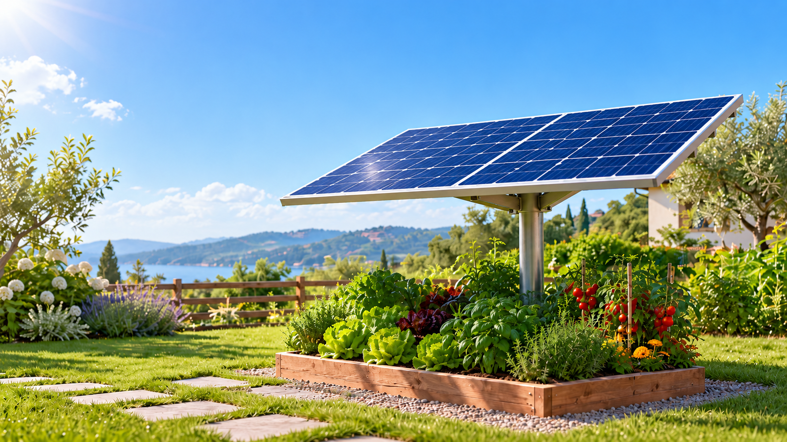

Si orienta verso il sole
Il supporto motorizzato regola direzione e inclinazione. La produzione effettiva dipende da pannello, esposizione e configurazione.
SECONDA VITA AL FOTOVOLTAICO
Stai rinnovando il tuo impianto? Un pannello che ha vent’anni può avere ancora molto da offrire. Con Solar Tracker, lo rimettiamo al lavoro nel tuo giardino.
Il tuo pannello, oppure uno recuperato fornito con il kit.

Recupera ciò che valePrima di sostituire, valutiamo.
Segui il soleUn kit, un nuovo utilizzo.
Prenditi cura del verdeEnergia, luce e irrigazione.
IL PROBLEMA, VISTO DA VICINO
Quando rinnovi un impianto, i pannelli rimossi non sono necessariamente inutilizzabili. La loro età è solo una parte della storia.
Ecco come gli diamo un nuovo ruolo20 anni
Con un degrado ipotetico dello 0,5% annuo, resterebbe circa il 90% della potenza iniziale.1 Il tuo pannello va misurato: questo è un esempio, non una garanzia.
Il primo passo è una verifica. Condizioni, prestazioni elettriche, dimensioni e peso ci dicono se il pannello può essere recuperato e abbinato al kit.
LA NOSTRA PROPOSTA
Solar Tracker è il kit pensato per dare una nuova funzione a un pannello idoneo: seguire il sole e gestire la luce per le piante sotto di lui.
Il pannello si orienta verso il sole del mattino.
Il supporto motorizzato regola direzione e inclinazione. La produzione effettiva dipende da pannello, esposizione e configurazione.
Se le piante hanno bisogno di più luce, il pannello cambia posizione. Energia e verde trovano il loro equilibrio.
Il progetto integra sensori, monitoraggio fotografico e irrigazione da serbatoio. Dotazioni e funzionamento vanno definiti per il kit finale.
Solar Tracker nasce da un prototipo. La versione domestica, il supporto per pannelli di dimensioni reali e le dotazioni commerciali sono da validare prima della fornitura.
DAL TETTO AL GIARDINO
Partiamo da quello che hai e dallo spazio in cui vuoi usarlo. Recuperare ha senso quando il pannello è idoneo e il progetto è adatto a casa tua.
Foto, modello, anno di installazione e posizione: le prime informazioni per capire da dove partire.
Controlli sul modulo e sul sito. Se il pannello non è recuperabile, valutiamo un’alternativa e il percorso di riciclo.
Un progetto con le voci separate: kit, eventuale smontaggio, trasporto, reinstallazione e accessori.
Installazione e collaudo nella configurazione concordata, con indicazioni per utilizzo e manutenzione.
COSTI, SENZA SORPRESE
Un kit principale per partire, un modulo aggiuntivo per ogni altro pannello. I prezzi sono le ipotesi dell’analisi economica HackTurin: il pannello è già tuo, recuperato e verificato. Smontaggio e posa richiedono un preventivo separato.
STIME DI PROGETTO · IVA ESCLUSA · NON È UN LISTINO| Voce | Stima, IVA esclusa |
|---|---|
| Kit principale (master)Per il primo pannello: controllo, camera, batteria, regolatore, struttura e irrigazione | 349 € |
| Modulo aggiuntivo (satellite)Per ogni altro pannello, collegato al kit principale | 149 € |
| Configurazione per 4 pannelli1 kit principale + 3 moduli aggiuntivi | 796 € |
| Software opzionaleAbbonamento previsto dal modello economico | 48 €/anno |
| Pannello già di tua proprietàNessun nuovo acquisto; idoneità da verificare | Nessun acquisto |
| Verifica e smontaggio dal tettoSe necessari: importi non stimati nel PDF | Da quotare |
| Reinstallazione e collaudo sul postoPosa, opere e collegamenti: importi non stimati nel PDF | Da quotare |
| Eventuale pannello fornito con il kitAlternativa da valutare: esclusa dal modello del PDF | Da quotare |
Stime per una produzione di alcune centinaia di pezzi, IVA esclusa. Non sono un’offerta o un preventivo. Il kit principale include la batteria e il regolatore previsti dal progetto; inverter, connessione alla rete, pratiche e interventi sul posto non sono quantificati. Il costo finale dipende dalla verifica tecnica.3
COME SI SOSTIENE IL PROGETTO
Ordine tipo del primo anno: 1 kit principale + 3 moduli aggiuntivi. La torta ripartisce i 796 € di ricavi tra costi variabili e margine disponibile per coprire i costi fissi.
Questo è il margine del progetto, non il risparmio del cliente o un utile netto. La commissione all’installatore è un costo commerciale del modello e non quantifica la posa sul posto. Abbonamenti esclusi. Il PDF arrotonda alcune cifre: qui usiamo i costi di produzione analitici, fino ai centesimi.3
I DUBBI PIÙ COMUNI
Il recupero parte dalle domande giuste.
Può funzionare, ma non basta conoscere l’età. Potenza residua, integrità, isolamento e stato dei componenti vanno verificati. Il risultato dei controlli decide se il riuso è sensato.2
No. La proposta prevede anche un kit con un pannello recuperato fornito insieme al supporto, selezionato per la compatibilità con il progetto. Disponibilità e caratteristiche saranno indicate nel preventivo.
La proposta è pensata principalmente per giardini e spazi a terra. Su terrazzi e balconi servono verifiche specifiche di carichi, ancoraggio, vento, ingombro e ombreggiamenti. La compatibilità non è automatica.
Non è previsto un collegamento diretto a una presa. L’utilizzo dell’energia va progettato con componenti compatibili: un solo pannello non sostituisce l’impianto domestico. La batteria di servizio è prevista nel kit principale. Ulteriore accumulo, inverter ed eventuale connessione alla rete richiedono una progettazione e un preventivo dedicati.
Non necessariamente. Il caso più naturale è un modulo già rimosso o in rimozione durante un rinnovo previsto. Prima di spostare un pannello ancora in uso, vanno confrontati costi, produzione persa e beneficio del nuovo utilizzo.
Non viene abbinato al tracker. Valutiamo un pannello alternativo e ti indirizziamo verso una filiera qualificata per la gestione e il riciclo del modulo non recuperabile.
LA PROSSIMA ENERGIA È GIÀ A CASA TUA
Prepara qualche informazione. Avrai un riepilogo da scaricare e condividere quando vorrai approfondire la proposta.
1 Esempio semplificato: 250 W × (1 − 0,005 × 20) = 225 W. Il degrado varia per tecnologia e condizioni. Fonte: studio NREL sui tassi di degrado ↗
2 Il riutilizzo richiede selezione e controlli dei moduli. Fonte: IEA PVPS, moduli di seconda vita ↗
3 Fonte dei prezzi e del grafico: “Tutore agrivoltaico da pannelli di seconda vita: analisi economica e pitch”, Davide Colabella, 11 ottobre 2026, pp. 5–8. Stime di progetto per produzione in serie, non preventivi validati.